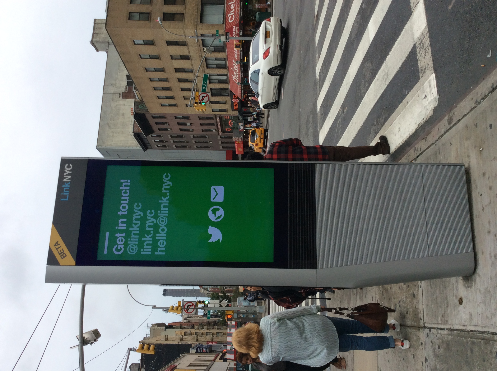

Investigative Data Report // New York City
The Big Apple's
Big Brother Problem.
LinkNYC was launched in 2015 as a digital-equity program that promised free gigabit Wi-Fi to neighborhoods underserved by home broadband. It has also become the largest warrantless surveillance network operating in the five boroughs, with kiosks concentrated in the neighborhoods least equipped to resist their rollout.
Compiled by Rayan Khan

The Background
LinkNYC was built as a public Wi-Fi network. It also functions as a surveillance one.
Starting in 2015, New York City began replacing its remaining payphones with 9.5-foot steel kiosks offering touchscreens, USB charging ports, and free gigabit Wi-Fi. The program, called LinkNYC, was framed as a digital-equity measure for residents without home broadband. By the end of its first deployment wave, it was the largest public Wi-Fi network in the United States.
The kiosks are owned and operated by CityBridge LLC, a private consortium formed in 2014 to win the franchise. CityBridge has three corporate members: Intersection, an advertising and data company that handles the kiosks' commercial inventory; Qualcomm, which built the hardware; and Boldyn Networks, which manages the infrastructure. According to CityBridge's published privacy policy, the kiosks continuously collect device identifiers, camera footage, and environmental sensor readings from anyone within range, regardless of whether they connect to the Wi-Fi.
That collection sits outside the accountability rules the city wrote for its own police department. The Public Oversight of Surveillance Technology Act (POST Act), passed in 2020, requires the New York Police Department to publish impact and use policies for every surveillance tool it operates, including who may access the data, under what conditions, and how long it is retained. CityBridge is not part of the NYPD, and the POST Act does not apply to it. The franchise agreement, negotiated in 2014 before most of the kiosks' surveillance capabilities were public, contained no equivalent disclosure obligation. The result is a surveillance network covering all five boroughs that is not required to publicly account for how it works or who can use it.
The Finding
The NYPD needs a court order to do what LinkNYC does by default.
Under the POST Act, the NYPD's official Impact and Use Policy for “WiFi Geolocation Tracking Devices” requires probable cause and a court order before officers may deploy such a device. CityBridge operates the largest Wi-Fi geolocation network in New York City, and its kiosks rely on the same underlying capability. Neither the franchise agreement nor the company's published privacy policy imposes an equivalent legal threshold. Collection is continuous and does not require a warrant.
| Constraint | NYPD WiFi Geolocation per POST Act Impact & Use Policy |
LinkNYC per CityBridge privacy policy |
|---|---|---|
| Legal threshold | Probable cause and a court order | None; collection is passive and continuous |
| Justification | Exigent circumstances (e.g. imminent threat to life) | Proximity to a kiosk; no user action required |
| Scale | Tactical devices, case-by-case deployment | 2,255+ fixed kiosks, citywide, always-on |
| Data retention | Location data is not recorded | Indefinite prior to Dec 2022; hashed identifier stored thereafter |
| Scope | Narrow, target-specific | Ambient and continuous; not target-specific |
NYPD WiFi Geolocation Tracking Devices IUP (POST Act); KPMG audit PF-01; LinkNYC Privacy Policy; NYC.gov POST Act disclosures.
The POST Act applies only to surveillance tools the NYPD operates directly. Because CityBridge is a private consortium and not part of the police department, the 2,255+ LinkNYC kiosks logging device identifiers across the five boroughs fall outside its disclosure framework. CityBridge's published privacy policy contains an exemption broad enough to cover most law-enforcement requests: data and footage may be shared with police “to detect or address illegal activity” or where disclosure is “useful to protect safety.” Camera footage has been handed to NYPD investigators without a warrant requirement, according to documentation summarized by the Surveillance Technology Oversight Project (S.T.O.P.).
S.T.O.P.'s “Dragnet City” report (October 2025) describes how that material moves further into the NYPD's Domain Awareness System (DAS), a fusion platform that, according to the report, integrates more than 80,000 cameras, an estimated five million license plate reads per day, drone feeds, and 911 call records. The DAS produces what the report calls “entity reports” on individual New Yorkers, drawing on appearance data, social affiliations, 311 call history, sealed arrest records, and DNA, and accessible from officers' smartphones. The report further documents instances of NYPD data flowing onward to federal agencies, including U.S. Immigration and Customs Enforcement. Civil-liberties advocates including the NYCLU and S.T.O.P. have characterized this combination — extensive private collection feeding a public surveillance system with limited public oversight — as a structural feature of the way the city built its surveillance capacity, not an incidental gap.
S.T.O.P., “Dragnet City: NYPD's Omnipresent Domain Awareness System,” 28 Oct 2025; LinkNYC Privacy Policy; NYCLU testimony, NYC Council Committee on Technology, 7 June 2023.
The Machine
LinkNYC kiosks identify devices that never connect to them.
LinkNYC replaced approximately 13,000 obsolete payphones beginning in 2015, offering free gigabit Wi-Fi, USB charging, and free domestic calls in exchange for the use of city sidewalks. The program operates at no direct cost to taxpayers; its revenue model is based on digital advertising and data services rather than municipal funding.
Intersection, the advertising and data subsidiary within the CityBridge consortium, markets the kiosks to brands as a “context-aware platform” for reaching pedestrians as they move through physical space. According to NYCLU testimony delivered to the New York City Council Committee on Technology in June 2023, Intersection's marketing materials describe targeting cohorts such as “18-to-34-year-old high-income college graduates” based on behavioral data drawn from the kiosks' immediate environment. To deliver that level of targeting, each kiosk operates first as a sensor platform and second as a Wi-Fi access point.
Each kiosk carries two HD cameras, Wi-Fi access points, Bluetooth beacons, and environmental sensors that monitor noise, temperature, light, and air quality. According to CityBridge's privacy policy, camera footage is retained for seven days. The Wi-Fi and Bluetooth radios continuously scan for nearby devices, logging the unique MAC address each device broadcasts whenever Wi-Fi or Bluetooth is enabled. Collection occurs whether or not the device's owner connects to the LinkNYC network, and whether or not the owner is aware the kiosk is present. The 32-foot Link5G poles introduced in 2022 add 5G antennae and additional sensor capacity to that footprint.
Modern smartphones partially mitigate passive identification through MAC address randomization, a feature in which the operating system broadcasts a fresh, fake identifier to each new network. Academic research has shown that the defense is incomplete. A 2024 survey published in Security and Safety documents that Wi-Fi probe requests still leak structured timing patterns and behavioral fingerprints, and that a device's radio hardware emits a distinguishable physical signature — Radio Frequency Fingerprinting (RFFI) — that persists across software-level address changes. A 2025 paper introducing the MobRFFI system applies the technique specifically to non-cooperative re-identification of mobile devices for mobility-intelligence applications, the category that includes networks like LinkNYC.
“Radio frequency fingerprint identification for Internet of Things: A survey,” Security and Safety (2024); MobRFFI: Non-cooperative Device Re-identification for Mobility Intelligence (2025).
Y.-A. de Montjoye, C. A. Hidalgo, M. Verleysen, V. D. Blondel, “Unique in the Crowd: The Privacy Bounds of Human Mobility,” Scientific Reports 3, 1376 (2013).
The CityBridge consortium has three corporate members: Intersection (advertising and data), Qualcomm (hardware), and Boldyn Networks (connectivity, which also operates the city's subway Wi-Fi). The three companies jointly manage the data flows generated by the kiosks under the franchise agreement. The NYCLU has summarized the result in a single sentence.
“LinkNYC is a barely mitigated privacy disaster.”
What each sensor captures
| What | How | Risk |
|---|---|---|
| Passive location Critical |
Wi-Fi and Bluetooth radios intercept the device's MAC address without requiring a connection | Movement patterns become inputs to advertising and location analytics products |
| Visual surveillance High |
Dual HD cameras, 7-day retention | Continuous recording; latent facial-recognition input |
| Audience targeting Critical |
Algorithmic fusion via Intersection backend | Re-identification of "anonymous" individuals for ad cohorts |
| Environmental Medium |
Noise, temp, light, pollutant sensors | Potential expansion of use into incident response; possible Domain Awareness System integration |
LinkNYC privacy policy; NYCLU testimony; EFF analysis; KPMG audit findings.
Users who wish to opt out of passive identification cannot do so by declining to log in to the LinkNYC network. The kiosks read the broadcasts that phones emit automatically when Wi-Fi or Bluetooth is enabled, independent of any user action. Effective mitigation requires disabling Wi-Fi and Bluetooth on a device, typically by enabling Airplane Mode, while the device is within range of a kiosk. Civil-liberties advocates have cited the absence of any practical opt-out as evidence that the network operates without a meaningful consent mechanism.
The Geography
Every kiosk. Every borough. Live.
Map showing the geographic distribution of LinkNYC surveillance kiosks. Original Link 1.0 kiosks (blue) are concentrated in Manhattan commercial corridors. Link5G kiosks (pink and amber) are deploying primarily in outer-borough neighbourhoods under the 90% equity mandate. Kiosk counts update live from NYC Open Data — see the borough broadband chart below for numerical comparisons.
Loading live data from NYC Open Data…
The first wave of kiosks was concentrated in Manhattan.
The Link 1.0 deployment placed the majority of its kiosks in high-income Manhattan commercial corridors. According to NYC Mayor's Office data, fewer than 10% of the original LinkNYC kiosks were sited in the Bronx, the borough with the highest rates of digital disconnection and poverty in New York City.
A 2025 paper in Technological Forecasting and Social Change, titled “From phone booths to Wi-Fi kiosks: the spatial inequality of public connectivity in New York City,” analyzed the rollout using spatial-statistics methods and concluded that the program operated independently of broadband need and did not reduce digital inequality. Civil-liberties advocates including the NYCLU have argued that the distribution reflects the network's funding structure, which depends on advertising revenue concentrated in commercial areas with heavy pedestrian traffic.
“From phone booths to Wi-Fi kiosks: the spatial inequality of public connectivity in New York City,” Technological Forecasting and Social Change (2025); NYC Mayor's Office, LinkNYC franchise data.
The franchise was renegotiated after CityBridge fell into arrears.
By 2019, CityBridge owed the city approximately $70 million in arrears, according to a 2021 report from the New York State Comptroller's office. Rather than rebidding the franchise, the city renegotiated it, restructuring the debt in exchange for a new generation of hardware: the 32-foot Link5G poles.
Reporting by THE CITY in April 2022 described the renegotiation as a shift in revenue model, under which CityBridge would lease space inside the new poles to cellular carriers as 5G antenna platforms. Subsequent reporting by Gothamist in July 2024 found that, of approximately 200 Link5G towers installed by that point, only two had carrier equipment fitted, indicating that the major U.S. wireless companies had not yet committed to the new platform. The kiosks' sensor and Wi-Fi capabilities, however, were operational throughout that period.
A 90% outer-borough mandate accompanied the new hardware: under the renegotiated franchise, nine of every ten new Link5G units must be sited in the outer boroughs or above 96th Street in Manhattan. NYC Mayor's Office documents identify 739 specific kiosk locations across 13 community districts selected for low median income, severe broadband gaps, and the absence of existing LinkNYC infrastructure.

THE CITY, “Big Tech Pays to Supersize LinkNYC,” 27 Apr 2022; Gothamist, “NYC’s massive Link5G towers aren't actually providing 5G (yet),” 12 Jul 2024.
Future kiosk deployment is concentrated in the boroughs with the largest broadband gaps.
The chart below compares borough-level broadband deficit (per American Community Survey 2018–2022 data via NYC OTI) with projected Link5G deployment under the current franchise terms. The Bronx, which has the city's highest broadband deficit, is also projected to receive the largest share of new Link5G kiosks. According to civil-liberties analysts including S.T.O.P. and the NYCLU, this pattern means the surveillance footprint of the program will be largest in the same neighborhoods that the original LinkNYC rollout did not adequately serve, per the 2025 spatial-inequality analysis cited above.
Need: ACS 5-year (2018–2022) via NYC OTI. Future deployment: derived from 90% outer-borough mandate and 13 priority districts (NYC Mayor's Office, 2022).
The Audit
A 2021 audit found that CityBridge had violated its privacy obligations for years.
In 2021, the New York City Office of Technology and Innovation (OTI) commissioned KPMG to audit CityBridge's compliance with the privacy provisions of its franchise agreement. The resulting report was posted to an OTI web page in January 2023 with significant redactions and no accompanying public announcement. The NYCLU obtained the document and surfaced its findings six months later, in June 2023, in testimony to the New York City Council Committee on Technology.
The Wi-Fi sign-on page displayed Intersection's privacy policy rather than LinkNYC's. Users connecting to the network were presented with the terms of the consortium's advertising subsidiary rather than the consortium itself.
Welcome emails sent to new LinkNYC users lacked the unsubscribe link required under the federal CAN-SPAM Act of 2003.
The Wi-Fi splash page did not reference the correct Terms of Use and Privacy Policy. Users connecting to the network did not have clear notice of the agreement they were entering.
KPMG audit (OTI, redacted Jan 2023); CityBridge remediation letter to OTI, 12 Dec 2022; NYCLU testimony to NYC Council Tech Committee, 7 Jun 2023; Palantir, “Foundry Entity Resolution” product page.
Who Pays
The neighborhoods with the fewest privacy alternatives bear the largest share of the surveillance load.
Residents with private home broadband or unlimited cellular data can largely avoid using LinkNYC. Lower-income residents, undocumented immigrants, and unhoused New Yorkers who rely on public Wi-Fi for routine internet access often cannot. For these users, the network functions less as an optional service than as primary infrastructure. Civil-liberties organizations including the NYCLU and the Surveillance Technology Oversight Project (S.T.O.P.) have argued that the resulting pattern places the largest surveillance burden on the populations with the least practical ability to opt out.
Academic and civil-liberties literature uses the term digital redlining to describe systems in which historically underserved communities receive expanded service only when that service is bundled with monitoring or extractive terms. According to NYC Mayor's Office documents, the 13 community districts designated for mandatory Link5G deployment under the renegotiated franchise are characterized by high broadband deficit, low median income, and long documented histories of intensive policing. The same neighborhoods that are slated to receive the largest share of new kiosks are therefore also the neighborhoods most likely to experience the kiosks' data flows in the context of law-enforcement use.
Wealthy historic districts
Upper East Side, Tribeca, Carnegie Hill, Financial District.
- Community Board 1 moratorium resolution
- FRIENDS of the Upper East Side legal campaigns
- Landmarks Conservancy aesthetic objections
- Congressman Nadler petition to FCC under NHPA §106
Mandated rollout districts
Brownsville, Hunts Point, Jamaica, Inwood, Stapleton.
- No equivalent preservationist institution
- No federal-level political champion
- Bound by the 90% outer-borough mandate
- Already heavily policed by Domain Awareness System

A 2025 report by the Surveillance Technology Oversight Project found that this population has been integrated into the city's broader surveillance apparatus through other means as well. According to the report, the Adams administration connected NYCHA security cameras to the NYPD's Domain Awareness System using NYCHA's own Wi-Fi infrastructure, without notification to residents, the City Council, or public housing administrators. The report states that one NYCHA campus was already streaming live to NYPD smartphones at the time of its publication and that the program contemplated expansion to 19 additional campuses. S.T.O.P. also cites prior NYPD acknowledgments that officers had used DAS camera feeds in NYCHA buildings for non-investigative purposes, including, in the report's wording, “for entertainment.”
S.T.O.P., “Dragnet City: NYPD’s Omnipresent Domain Awareness System,” Oct. 28, 2025.
“Facial recognition gets it wrong, leading to the false arrest of New Yorkers of color — and can be easily weaponized against protesters, activists, or religious communities exercising their fundamental First Amendment rights.”
S.T.O.P. has further documented downstream consequences of the city's data integration. According to the organization, U.S. Immigration and Customs Enforcement (ICE) has accessed NYPD automated license-plate-reader data, and sealed records — records legally protected from disclosure under New York State law — have been shared with federal agents and used against a pro-Palestinian protester in deportation proceedings. The organization has also identified private contractors that simultaneously advise city agencies and ICE's enforcement operations. For undocumented New York City residents who rely on LinkNYC as a primary internet connection, the report concludes, these documented downstream uses materially affect the privacy implications of using the network.
S.T.O.P., "Dear Mamdani: Dismantle NYC's Surveillance State," Feb. 26, 2026.
A separate municipal program, Big Apple Connect, indicates that the city has an existing alternative for delivering broadband to its lowest-income residents that does not depend on the LinkNYC infrastructure. According to a September 2025 announcement from the Mayor's Office, Big Apple Connect provides free in-home broadband and basic cable to approximately 330,000 NYCHA residents across 220 developments. The program does not use ambient sensors, captive portals, or third-party advertising infrastructure, and was extended in September 2025 to run through June 2028. Civil-liberties advocates have argued that the program demonstrates that municipal broadband initiatives need not incorporate the data-collection model used by LinkNYC.
NYC Mayor’s Office, “Mayor Adams Extends ‘Big Apple Connect’ Program,” September 2025; nyc.gov/bigappleconnect.
The deployment pattern observed in New York has been replicated in other cities. A 2025 academic paper published by Taylor & Francis, titled “Digital policing of homeless and other marginalised groups in smart cities,” tracked the rollout of InLinkUK smart kiosks in London's Tower Hamlets and identified a parallel correlation between kiosk deployment in lower-income neighborhoods and intensified data-driven policing operations. The authors attribute the similarity to comparable public-private funding and contracting structures in both cities.
Tandfonline (2025), "Digital policing of homeless and other marginalised groups in smart cities."
What Can Be Done
The Digital Fairness Act would change the legal status of LinkNYC's data collection.
The New York State Legislature is considering legislation that would directly address the legal gap that allows LinkNYC's current data-collection practices. The Digital Fairness Act, introduced as Senate Bill S4276 and Assembly Bill A3308 in February 2025, is currently under review by the State Senate Committee on Internet and Technology. According to NYCLU analysis, the bill remains positioned to move out of committee during the current legislative session if it receives sufficient constituent engagement.
The bill would require any business holding the personal information of 500 or more New York State residents to provide meaningful, affirmative notice before that data is collected. The 500-record threshold is calibrated to the total volume of data held by an entity rather than to per-location traffic, with the effect of exempting small local businesses while applying to commercial-scale data operators such as CityBridge. The bill also restricts discriminatory targeted advertising and establishes accountability requirements for automated decision systems used in government and business contexts.
- Affirmative consent requirement: opt-in required before passive collection of device identifiers; directly addresses the violation identified in KPMG finding PF-01.
- Application to private contractors: the bill applies to private operators such as CityBridge, not only to surveillance tools owned by the NYPD; closes the gap that places LinkNYC outside the POST Act framework.
- Automated-decision accountability: the bill establishes oversight requirements for algorithmic systems used in housing, credit, employment, and government decisions.
- The NYCLU has published a formal legislative memo in support of the bill.
- The State Senate advanced a related surveillance-pricing bill, S8623, in May 2026.
Because there is no practical way for an operator to obtain affirmative consent from a passerby, the passage of the bill would effectively require operators of ambient-data networks such as LinkNYC to restrict collection to individuals who actively connect to the network and accept its terms of service. The sensor hardware would remain in place; the passive collection from non-users would not, according to civil-liberties analysts including the NYCLU.
Tell your rep to pass S4276 / A3308.
The bill is currently in committee. Constituent contact is the most direct way to register support before the committee vote. Two steps are outlined below.
Step 1 — Copy this message
Paste the message into the contact form on each representative's official page. Adding the writer's neighborhood and a brief personal sentence is more effective than a verbatim send.
Step 2 — Send it to your representatives
Use the official NY State lookup pages to find your Senator and Assembly Member, then paste the letter into their contact form.